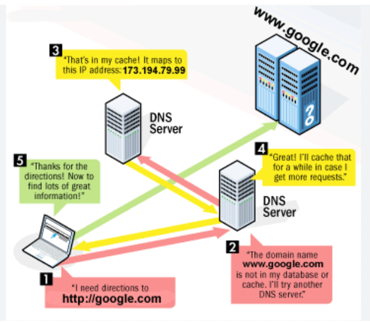

<!DOCTYPE html>
<html lang="en"></html>
<head>
    <meta charset="UTF-8">
    <meta name="viewport" content="width=device-width, initial-scale=1.0">
    <nav>
        <a href="index.html">Home</a>&#65372;
        <a href="www.html">World Wide Web</a>&#65372;
        <a href="tcpip.html">TCP/IP</a>&#65372;
        <a href="http.html">HTTP</a>&#65372;
        <a href="dns.html">DNS</a>&#65372;
        <a href="html.html">HTML</a>&#65372;
        <a href="webserver.html">Web Server</a>&#65372;
        <a href="webbrowser.html">Web Browser</a>&#65372;
        <a href="url.html">Uniform Resource Locator</a>&#65372;
        <a href="intranet.html">Intranet</a>&#65372;
        <a href="extranet.html">Extranet</a>&#65372;
        <a href="ftp.html">File Transfer Protocol</a>&#65372;
        <a href="web1.0.html">Web 1.0</a>&#65372;
        <a href="web2.0.html">Web 2.0</a>&#65372;
        <a href="web3.0.html">Web 3.0</a>&#65372;
        <a href="web4.0.html">Web 4.0</a>&#65372;

    </nav>
    <title>Terminology:DNS</title>
    
    
</head>
<body>
    <h1>DNS</h1>
    <p>
        DNS, which stands for Domain Name System, is a hierarchical naming system used to translate human-readable domain names (like www.example.com) into IP addresses (like 93.184.216.34).
    </p>
</body>
</html>

<h2>How DNS Works  </h2>
<p>
    When a user types a domain name into a web browser, the browser sends a request to a DNS resolver,
     which is typically provided by the user's internet service provider (ISP). The resolver then queries a series of DNS servers 
     to find the corresponding IP address for the domain name. This process involves multiple steps, including querying root servers,
      top-level domain (TLD) servers, and authoritative name servers until the correct IP address is found and returned to the browser. 
      The browser can then use this IP address to establish a connection with the web server hosting the website.
</p>
<h2>Importance of DNS</h2>
<p>
    DNS is essential for the functioning of the internet, as it allows users to access websites and other online services using easy-to-remember domain names instead of complex IP addresses. Without DNS, users would have to remember and enter IP addresses directly, which would be impractical and error-prone. DNS also plays a crucial role in email delivery, load balancing, and other internet services, making it a fundamental component of the internet infrastructure.   
</p>
<h2>Key Components of DNS</h2>
<ul>
    <li><strong>DNS Resolver:</strong> A DNS resolver is a server that receives DNS queries from clients (such as web browsers) and is responsible for finding the corresponding IP address for a given domain name.</li>
    <li><strong>Root Servers:</strong> Root servers are the highest level of DNS servers that store information about top-level domains (TLDs) and direct queries to the appropriate TLD servers.</li>
    <li><strong>Top-Level Domain (TLD) Servers:</strong> TLD servers manage specific top-level domains (like .com, .org, .net) and direct queries to the authoritative name servers for those domains.</li>
    <li><strong>Authoritative Name Servers:</strong> Authoritative name servers store the actual DNS records for specific domain names and provide the final answer to DNS queries, returning the corresponding IP address.</li>
</ul>
<h2>What are its main parts? </h2>
<p>
    The main parts of DNS include:
    <ul>
        <li><strong>Domain Names:</strong> Human-readable names that are used to identify websites and other online resources.</li>
        <li><strong>IP Addresses:</strong> Numerical addresses that are used to identify devices on the internet.</li>
        <li><strong>DNS Records:</strong> Data stored in authoritative name servers that provide information about domain names, such as their corresponding IP addresses, mail servers, and other relevant information.</li>
    </ul>
</p>
